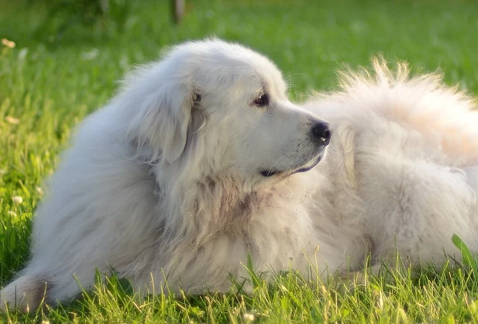

Montagne des Pyrénées, le plus majestueux!
La race classique de chien de montagne est bien sûr le Montagne des Pyrénées! Évidemment originiaire des Pyrénées, ce chien géant est un véritable amour! Mais parfois une tête dure!

Ce chien était utilisé autrefois pour protéger les troupeaux contre les loups et les coyotes. Chien de protection absolue, il n'a pas peur de se mettre lui-même en danger pour protéger sa famille.
Dans les concours de chiens pure race, comme le Westminster, c'est probablement la race de chien qui attire le plus de spectateurs! Sa blancheur et son côté majestueux en fait un un chien magnifique à regarder!